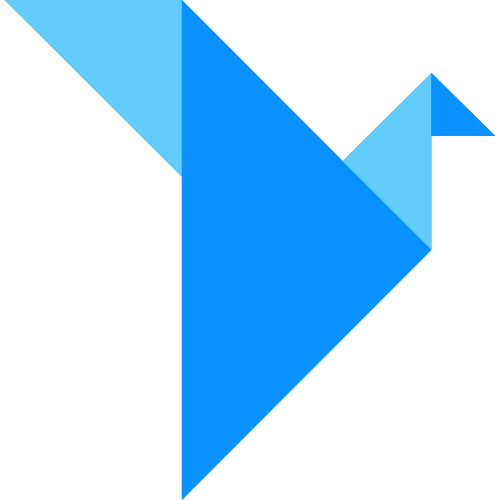
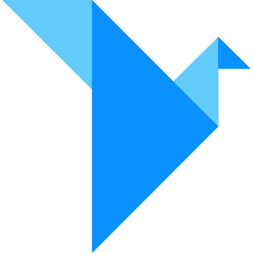

Intro
Duration
January—March 2018
Skills
Research
Testing
Prototyping
Tools
 

Goal
Design a prototype of a To-Do list mobile application with a Pomodoro functionality.
"The Pomodoro Technique is a time management method... The technique uses a timer to break down work into intervals, traditionally 25 minutes in length, separated by short breaks."
Pomodoro Technique, Wikipedia
Approach
- Analyzing existing Pomodoro applications, identifying the target audience, common patterns, and design flaws.
- Designing, prototyping, and testing user flows and interactions.
- Iterating design based on feedback and creating final deliverables.
Process
Top Apps Feedback
Summary
- Target Audience – people with difficulties of focusing on completing tasks.
- Users seek the ability to organize tasks into lists, flexible timers, and better editing, removing, and skipping tasks functionality.
- Finally, the users appreciate the simplicity and clear hierarchy of the content on the screen, including tasks' titles and descriptions.
Therefore, improving these features creates new design opportunities.
During the brainstorming session, I came up with three general directions for tasks organization and interactions,
- Card stacks layout for current tasks "A-La-Tinder".
- Card lists organized by categories in a panel view.
- App integrated with iMessage where tasks start only if they are shared with contacts.
In my class peer review, I received positive feedback for Idea #3. It was also my favorite one because this interaction motivates people to accomplish tasks they planned and shared, applying the factor of accountability.
Such interaction could potentially become a core feature of the product, playing a vital role in attracting new customers.
Brainstorming
User Flow
Step 1. Using the native messaging platform to create tasks by sharing them with friends and relatives.
Step 2. Receiving a notification and using the app's timer with Start|Pause|Stop functionality.
Step 3. Sending a confirmation to the person who they shared the task with.
Initially, to maintain the accountability theme, I decided to name the application as Promise and the tasks as promises.

Promise v.1
Feedback
After reviewing user testing results and feedback from my peers, I identified a few drawbacks in the existing design,
- The transition between different applications seemed confusing. Testers would like the flow to be more intuitive.
- The dependency on scheduling task only via sending a message felt a little bit too persuasive. Also, the experience of receiving notifications on the "friend-side" might have been disturbing.
- The overall visual aesthetics could have been improved.
Pivot
Based on the feedback, I decided to rethink the application's flow from the ground up, instead of iterating on my design.
I reverted back to reviews from the users of existing applications. Most of them would just like to see a simplified flow of creating tasks, list organizations, and more intuitive timer interactions. Besides that, some users wished to integrate better options for reusing accomplished tasks.
A was also tend to revise the mandatory sharing option of creating a task to be more user-friendly.
Design Sessions
During participatory design sessions with pomodoro apps' users, we came up with three main user flows.
Based on the Hick's Law, "the more choices a person is presented with, the longer the person will take to reach a decision."
Session 3 results, in this case, looked very promising. It had the least amount of screens and navigation choices and at the same time provided all the necessary options.

User Flow
The Main Screen. Upon opening the app, the user would add new tasks to make a To-Do list, then select them and choose between Delete | Start Timer options.
The Right Screen would have the list with the active Timer and the To-Do list. It also would allow to change the time for Work and Rest intervals.
The Left Screen would be giving an option to scroll through the past tasks in the Feed and the Calendar views and repeat them by adding to the To-Do list in the Main Screen.
Wireframes
Results
01
Tasks
The interaction starts in the Tasks screen with adding tasks. It also allows the users to Delete these tasks, or add them to the Agenda.
02
Agenda
Current tasks screen. Provides the ability to move these tasks up and down the list, set Intervals, and start the Timer.
03
Timer
The current task indicator changes to solid "white", when the timer starts. The Next button allows the users to skip the current task.
04
Archive
Completed tasks are being saved in the Archive. The users are able to view these tasks in the Feed | Calendar views and choose them to repeat.
Details
Colors
I chose to use a combination of pure Black (#000000), White (#FFFFFF), and medium-dark Grey (#999999) colors to provide better contrast for the accessibility. The primary Blue has a light Purple tone, which associates with a stability of Blue and the energy of Red.
Typography
My typography choice was the Circular Std which is a modern, friendly Sans Serif typeface with simple geometrical forms. It provides a variety of weights and great readability on screens.
Icons
I designed a set of icons using simple geometrical shapes with rounded corners which matches the curves of the Circular Std typeface. The Play | Pause | Next icons contain conventional meaning for better usability.
Spacing
To maintain the elements' consistency across the screen, I used the 8-pt Spacing Template for Sketch. I developed this symbol library, using the Spacing method described in Google Material Design, to speed up my design workflows.
Takeaways
Working on this project, I was one more time reassured that design is an iterative process. I learned that during this process it is important not to marry with your very first idea, focus on listening to the users' feedback, and always try to deliver a better experience.
Thank you for reading!